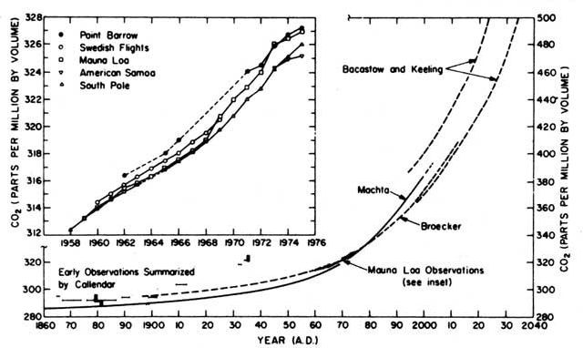
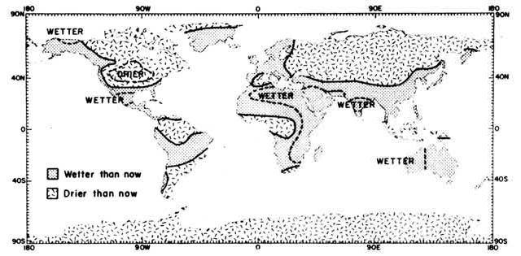

The Plowboy Interview
Dr. Walter Orr Roberts discusses the greenhouse effect.
By the Mother Earth News editors
March/April 1984
Issue # 86 - March/April 1984
The ever-growing menace of pollution is no secret to most MOTHER readers. We live with the news-and some of us encounter immediate examples - of it every day. Power plants emit sulfur dioxide and nitrogen oxides that can make precipitation as acid as vinegar. Automobiles spew out compounds that react in sunlight to create brown sheets over urban areas. Synthetic organic chemicals invade our underground water supplies. Worse still, some chemical processes result in by-products, such as dioxin, that are so toxic that a mere one part per billion is considered dangerous!
In the face of all these exotic contaminants, how in the world can anyone be concerned over something so mundane as carbon dioxide? We all know that the gas is normally present in our atmosphere in weak concentrations . . . and that it's so nontoxic that we can chill food with it, in the formofdry ice, and put out fires with extinguishers charged with the compound. Why, without carbon dioxide our gardens wouldn't even grow!
Indeed, in any concentration that's likely to occur on earth in the immediate future, carbon dioxide presents no direct threat to our health. But, as two of MOTHER's staff members learned during a visit to the National Center for Atmospheric Research in early October of 1983, the accumulationofCO 2 in our atmosphere-as the resultofburning fossil fuels-will, in all likelihood, bring about profound changes in our climate within 50 years.
Dr. Walter Orr Roberts, president emeritus of the University Corporation for Atmospheric Research (and retired directorofits laboratory perched on a mesa above Boulder, Colorado), told our team that the majorityofthe world's atmospheric physicists believe that the warming trend that would result from the Greenhouse Effect is inevitable. Our editor and photographer were also lucky enough to get a tour of NCAR with the man who knows it best. Inside they saw oneofthe world's most powerful computers, a Cray I, where staggeringly complex simulations of our atmosphere's circulation are run at the rate of hundredsofbillionsofcalculations per hour. They also visited a "clean room" where the solar telescope for Skylab was built, and there saw an instrument that measures the sun's diameter with amazing accuracy.
Dr. Roberts' credentials and achievements are far too numerous to list here in their, entirety, but a few highlights hint at the scope of his distinguished career. After earning his bachelor's degree at Amherst College, Walt went on to Harvard to complete a master's and a doctoral degree. Then, after matriculation, he became a research associate at the Harvard College Observatory, where he studied the solar corona and the influence of various other solar phenomena on the earth's weather. In 1946 he was named director of the college's High Altitude Observatory. Roberts stayed there, continuing his studyofthe sun, until he became the first directorofthe National Center for Atmospheric Research in 1960. He was succeeded as directorofthat organization in 1968, but he continued as chief executive of the University Corporation for Atmospheric Research-the multimember organization that manages NCAR-until 1973.
Dr. Roberts continues as president emeritusofUCAR and as a research associate at NCAR . . . but also spreads his time between being a professor at the UniversityofColorado, a senior fellowofthe Aspen Institute for Humanistic Studies (where he was director of the Program on Food, Climate and the World's Future from 1974 through 1981-vice presidentofthe American Philosophical Society, and a faculty member of the Western Behavioral Sciences Institute, where he recently led a telecomputing course on the impact of climate changes on human societies.
Though Dr. Roberts still keeps up with developments in the hard science of climate change, his recent interests have leaned toward the effect that future weather may have on the earth's ability to feed its human population. In short, because of his solid scientific background and his keen interest in the social, political, and moral issues of climate change, it would be hard to imagine anyone who is more qualified to speak about the Greenhouse Effect.
Throughout the text of this interview, you'll note that nearly everything that's known about the Greenhouse Effect is couched in terms indicating at least a little bit of uncertainty. Being the good scientist that he is, Dr. Roberts would never stoop to calling a calculation or a statisticalcorrelation a fact. And, as he emphasized over and over during the conversation, the atmosphere is a tremendously complex system to try to second-guess. The scientific community won't be absolutely sure that ourplanet is becoming warmer because of carbon dioxide accumulation until our climate is several degrees hotter than it is now . . . and even then our understanding of the exact mechanisms may still be hazy. Nonetheless, as one of the most distinguished atmospheric scientists points out in the following interview, there's almost nothing of which he and his colleagues are more certain!
PLOWBOY: Dr. Roberts, last fall the Environmental Protection Agency and the National Academy of Sciences both released reports on the Greenhouse Effect. For many people, the idea that humankind's activities might be changing the weather was startling. How long has the scientific community had an inkling of this potential problem?
ROBERTS: Well, I suppose it would be almost impossible to recognize the first moment. You see, even the ancient Greeks believed that humans were able to influence the weather . . . both by supernatural acts and by their day-to-day impact on the earth.
The work that best characterizes modern interest in man's influence on climate, though, is probably the research done independently by two chemists, Arrhenius and Chamberlain. Around the turn of the century, these men recognized that the accumulation of carbon dioxide in the atmosphere could produce a warming effect on the earth. They actually did some extremely crude calculations that predicted almost exactly the magnitude of warming that would occur globally as a result of increasing carbon dioxide levels.
PLOWBOY: Arrhenius and Chamberlain recognized that human activities were boosting the carbon dioxide in the atmosphere above normal levels?
ROBERTS: I don't know whether you could say above normal, because it's hard to determine just what normal is. The earth's atmosphere has, at various times in the past, probably had much less or much more carbon dioxide than it does now. The variation might be as much as two or three times today's level.
PLOWBOY: What magnitude of increase, then, do scientists expect from human influence?
ROBERTS: We're talking about a doubling over the next 50 years from turn-of-the-century levels. The total amount is actually very small: Today C0 2 represents about 330 parts per million (ppm) of our atmosphere, but by 2030 or 2040 it's likely to reach a concentration of 500 to 600 ppm.
PLOWBOY:Where is this additional carbon dioxide coming from?
ROBERTS: There are many sources, but the one that's probably caused most of the increase over the last 100 years is the burning of fossil fuels such as coal, oil, and natural gas.
PLOWBOY: You've already mentioned that Arrhenius and Chamberlain thought that increasing levels of CO 2 in the atmosphere might cause the earth's climate to become warmer. Why would that be the case?
ROBERTS: The theory behind the Greenhouse Effect, as this warming trend's usually called, is based on the role carbon dioxide plays in helping the earth retain heat. The atmosphere - including its 330 PPM C0 2 - is very highly transparent to sunlight. The short-wavelength radiant energy coming from the sun warms the earth's surface, but that heat, which is in the form of infrared radiation, would escape from our planet's atmosphere were it not for molecules (such as carbon dioxide) that aren't transparent to infrared. Fortunately, some of the heat from the sun is retained as a result of the effect of carbon dioxide and other partially infrared-opaque molecules.
PLOWBOY: Without C0 2 , then, we'd be very cold right now?
ROBERTS: That's right. Without it, Earth would probably be too cold for life. But if our atmosphere were like that of Venus, for example, where carbon dioxide makes up more than 90% of the gases, our planet would be so hot that many metals would melt.
PLOWBOY: If carbon dioxide in the atmosphere increases to, say, 550 parts per million - a doubling from turn-of-the-century level - show much warmer is our climate likely to become?
ROBERTS: On the average, the earth's temperature will probably increase about 3° Celsius (5°F). There might be as much as a 10° Celsius (18°F) warming at the poles and as little as a 1 ° Celsius (1.8°F) warming around the equator. Also, some parts of the globe are likely to be colder, while others will become correspondingly much warmer. Climate (and its weather patterns) is a very complex, interactive subject.
PLOWBOY: Have we seen evidence of this C0 2 -induced warming trend yet?
ROBERTS: Carbon dioxide concentrations have increased 20 to 25% since the turn of the century, and we've seen an average of about 1° Celsius (1.8°F) warming during that same period. Some places have been warmer and some have been colder. It's an average of a lot of ups and downs . . . kind of like the stock market: Some values go up and some go down, but analysts can say that the stock market as a whole has risen.
Still, we don't consider this trend to be observational proof of the Greenhouse Effect. There are too many other possible causes for fluctuations. For example, from 1890 to 1940 the climate became warmer in the Northern Hemisphere, and everyone thought at the time that it was a result of the carbon dioxide effect. But from 1940 to 1960, the climate actually got colder . . . and that set people to wondering, "My gosh, maybe the warming wasn't caused by CO 2 after all!" And then, of course, the temperature average started back up again: 1981 was the hottest year in the Northern Hemisphere since the invention of the thermometer.
The long-term rise in atmospheric carbon dioxide content starting at the time of the industrial revolution and continuing into the next century. The early data were critically reviewed by Callender (1958) and subsequently reevaluated by Barrett (1975). The current series of observations for Mauna Loa are those reported by Keeling, et al. (1976b) and C.D. Keeling (private communication), for South Pole by Keeling, et al. (1976a) and C.D. Keeling (private communication), for American Samoa and Point Barrow by NOAA (1975) and T. Harris (private communication), and for the Swedish aircraft observations by Bolin and Bischof (1970). The model calculations predicting future carbon dioxide increases by Machta (1973), Broecker (1975), and Bacastow and Keeling (1973) all take account of the uptake of anthropogenic carbon dioxide by oceans and the biosphere (but in somewhat different ways) and assume a nearly exponential increase in the rate of burning of fossil fuels (notably coal) in the next half-century or more. It is expected that, in this time period, about half of the new carbon dioxide released will remain in the atmosphere. Illustration is from Climate Change and Society by William W. Kellogg and Robert Schware. Reprinted by permission of Westview Press, Boulder, Colorado.
PLOWBOY: What are some of the other important influences on the average global temperature?
ROBERTS: First of all, carbon dioxide isn't the only gas that contributes to the Greenhouse Effect, though it is the predominant one. Unburned hydrocarbons - such as gasoline vapors - and other gases may produce between a third and a half of the overall effect.
Furthermore, there are other factors, such as the dispersion of particulate matter in certain layers of our atmosphere, that have the -opposite effect.
PLOWBOY: Do all these influences result from industrialization?
ROBERTS: No, some of them are natural. For instance, when volcanoes erupt and put carbon dioxide (among other things) into the atmosphere, we can't really blame humanity.
PLOWBOY: How does the eruption of a volcano such as Mount St. Helens affect climate?
ROBERTS: Actually, St. Helens affected carbon dioxide levels very, very little. It's just not a big volcano, as volcanoes go. But the eruption of El Chicõn in Mexico that occurred in April of 1982 was much, much more potent. However, the main effect of El Chicõn wasn't the C0 2 released . . . it was the dust that the eruption spewed way up into the stratosphere. That dust layer reduced the sunlight coming in and caused cooling.
It's very complicated to figure out whether a given volcano is going to produce heating or cooling over land. Low-level dust or smoke, for instance, can bring about warming. And the effect depends on the season, as well. Still, we think that El Chicõn probably will have produced about 0.8 or 0.9° Celsius (1.3 to 1.5°F) cooling when the final results come in.
Interestingly enough, this cooling effect is roughly equal to the amount of warming the Greenhouse gases may have produced since the start of the industrial revolution. But unlike the Greenhouse Effect, it's shortlived.
PLOWBOY: Does all of this mean that a warming trend from the 'Greenhouse Effect is less than a sure thing?
ROBERTS: There are, of course, elements of uncertainty, but I would say that the likelihood of carbon dioxide-induced warming is one of the most certain of the predicted atmospheric effects. The idea is based on theoretical calculations, but scientists are more sure of it than they are about almost any other facet of our very, very complicated atmospheric system.
PLOWBOY: If (or when) the global average temperature increases 3° Celsius (5 °F), what sorts of problems are we likely to experience? We're obviously going to be more uncomfortable in the summer, but humanity can certainly survive that.
ROBERTS: Well, first of all, the Greenhouse Effect isn't going to be an unmitigated disaster. In fact, there are likely to be areas that actually benefit from it. Our predictions are rather speculative, but East Africa, for example, might get two or three times as much rainfall as it now does.
One method we have for making such predictions involves looking back at what climatologists call the Altithermal Period, a span of time about 4,000 to 8,000 years ago for which we have relatively good data. The climate at that point in history was warmer on a global scale than it is now, and that difference did result in different circulation patterns in the atmosphere . . . effects similar to those we expect from carbon dioxide.
PLOWBOY: Was that warming trend similar in magnitude to the one expected from the Greenhouse Effect?
ROBERTS: The doubling of carbon dioxide would probably produce a greater warming than occurred during the Altithermal . . . maybe from 50 to 200% greater.
PLOWBOY: So we're perhaps facing a climate change over the course of a century and a half that might exceed anything experienced on earth in thousands of years?
ROBERTS: That's certainly correct. A 3° Celsius (5°F) global warming (with as much as 10° Celsius at the poles and maybe 1 ° Celsius in the tropics) is probably about three times the heating that prevailed in the warm period around 1000 A.D., and it's also greater than the heating during the Altithermal over 4,000 years ago. So it would be unprecedented since the appearance of the first humans on earth, perhaps.
PLOWBOY: What exactly can the record of the Altithermal Period tell us about what might happen to our weather during a climate warming?
ROBERTS: The most profound effects are likely to be on moisture patterns: Specifically, there'll be changes in soil moisture brought about by increased or decreased rainfall and/or evaporation. One of my colleagues here at the National Center for Atmospheric Research, William Kellogg, has done a lot of work in this area, using the Altithermal Period as a model in developing a possible scenario.
Now there were lots of variations throughout the period, but if you look at the Altithermal on an average, you do see certain repeated patterns. One of these is that the centers of continents were very dry. The Great Plains of the U.S., for example, were probably drier than they were during the dust bowl. The Altithermal drought most likely extended over most of what is now the great agricultural region of this country.
Similarly, areas such as the Kazakh Desert in the Soviet Union were also drier than they are now. On the other hand, the Sahara may actually have been vegetated back then, since the drought belts moved north, up into the Mediterranean.
PLOWBOY: Did the characteristic drought belts of today move north, in general?
ROBERTS: Yes, the drought belts moved northward in the Northern Hemisphere. On the other hand, it was probably somewhat wetter in the·very high altitudes. In fact, there was probably more rainfall on the earth as a whole. But most of that moisture very likely fell into the oceans, because of a weakening of high-level winds in the atmosphere.
You see, when the poles get much warmer and the equator a little warmer, the temperature contrast between the polar and equatorial regions is reduced. And since that difference is the force that moves the large-scale winds on our planet, the winds were probably weaker. Major storms wouldn't have penetrated as far inland, so the great volume of moisture that was deposited probably fell on coastal areas and in the oceans.
PLOWBOY: Does this mean that weather in a warming period might be less variable?
ROBERTS: Well, that doesn't necessarily follow. The jet streams and the general circulation of the winds would probably be appreciably weaker. But that doesn't inevitably mean a decrease in variability. Weak systems operating within continents might wander around a larger area, because they wouldn't be controlled so well by the jet stream. The weather would be likely to become more summerlike, but weather during that season is at least as variable as that of the winter. Tornadoes occur in the warmer months, you know.
PLOWBOY: One aspect of the Greenhouse Effect that received a great deal of attention from the media after the EPA and NAS announcements was the possibility that ocean levels would rise as a result of the melting of polar ice. Would you care to comment on that potential threat?
ROBERTS: If the warming comes in according to the "3° Celsius in 50 years" scenario, there will be a measurable increase in the height of the oceans . . . but the rise won't happen so quickly that we can't accommodate to it. It'll probably be on the order of a few centimeters (an inch or two) every decade.
There is, however, the remote possibility that the West Antarctic ice sheet might slide off the land into the ocean. That mass is sort of anchored to the continent by sea ice, which would melt a lot faster than would the ice on land. If the melting of shallow sea ice destabilized the land-bound sheet, causing it to slide rapidly toward the ocean, the sea might rise as much as five meters (16 feet) in a decade or two. That would be very serious, but I think the probability of it happening within a thousand years is, say, 50/50.
PLOWBOY: Well, where would that put the odds of it happening in the next century?
ROBERTS: Such an event is essentially impossible to predict, but I think the odds are very, very small. It's not a possibility to ignore, though. After all, if every bit of the ice on Antarctica actually melted, you'd get a 50- to 80-meter (165- to 260-foot) rise. And Greenland would add another 5 meters (16 feet). Without a sudden slippage of an ice mass, it would happen at the rate of only a few centimeters per decade, but there would still be significant land mass lost, even during a slow rise.
PLOWBOY: How might a C0 2 -induced warming influence the spread of tropical diseases and pests?
ROBERTS: Once again, this is a little hard to quantify . . . because the prevalence of such things is very much related to the levels of atmospheric moisture, and we're much less sure about predicting rainfall than we are about predicting temperature. But, in general, the frost-free regions would expand, and freezing is one of the principal ways that diseases and insect pests are controlled. So, as examples, the tsetse fly and schistosomiasis would probably change distribution . . . and both could increase. You might also expect insects such as locusts to change their range, since they need to be close to the tropical zone for vegetation but not so close as to be exposed to the environment of a full tropical rain forest.
There could also be changes in the prevalence of respiratory diseases in northern climates. The milder weather that would probably occur in Scandinavia and Britain could lessen the incidence of colds, flu, and asthmatic conditions, since there's reason to think that these ailments are encouraged by staying indoors, where pollution is usually worse than it is outside. What's more, some people say that suicide rates in Scandinavia appear to be inversely related to temperature.
PLOWBOY: The southwestern U.S. is already experiencing a shortage of water. Is a warming trend likely to bring on a drinking-water crisis?
ROBERTS: In some areas, reduced rainfall may increase the competition between domestic use and irrigation. I don't think that there's an extreme threat to those who rely upon drinking-water supplies, but domestic water in general is likely to become more expensive. And, of course, periods of rationing may once again bring westerners to the point of choosing between watering their lawns and flushing their toilets.
One of the measures that can be taken-that, in fact, should be taken-is simply to plant things other than lawns in front yards. It's been done extensively in the Southwest: You see beautiful cactus gar dens and trees that require very little water. Cedars with shrubs, cactus, and stones can make an attractive, water-frugal front yard.
PLOWBOY: The natural grasses used on the grounds here at the research center certainly provide an example of a low-maintenance lawn.
ROBERTS: That was my idea. The grasses are suited to the rainfall in this area and require neither cutting nor irrigation. However, last spring we had so much rain that I began to wonder if we'd have to bring a few goats up onto the mesa to keep the yard from getting armpit-deep.
PLOWBOY: Using predictions of temperature and rainfall in the world's major agricultural areas, can you estimate how a 3° Celsius average warming might influence humankind's ability to feed itself?
ROBERTS: We know that the change in temperature alone isn't going to be very significant to agriculture, except in marginal areas where the growing season may be extended, making a new crop possible. But if the warming causes a 40% reduction in soil moisture in Kansas, for example, that indirect effect will be of major importance.
Again, please remember that rainfall estimates are very speculative. But, to offer a possible scenario, we might look again at what we know about the Altithermal Period. As I already mentioned, rainfall in eastern Africa would be likely to increase with a warming. And if, for example, rainfall doubled (which still wouldn't produce an especially large rainfall), it would have an enormously beneficial effect on the lower reaches of Ethiopia's great river, the Awash.
The possibility of producing food there would be greatly increased. Of course, the potential is already much larger than is being realized in the face of political strife, oppression, and warfare. But with proper management, Africa could certainly produce enough food for all its people.
PLOWBOY: Wouldn't the continent's population have to stabilize, though?
ROBERTS: Even counting a doubling of population, Africa could produce more than enough.
PLOWBOY: Are you saying that its agricultural output could be doubled, then?
ROBERTS: Africa could actually quadruple its output of food. The soil that's being cultivated today is giving relatively poor yields, but that doesn't have to be the case. It's not a matter of lack of natural resources: It's an economic and social problem. There is, of course, a major food production problem with meat, because of the tsetse fly. Cattle-raising is practically impossible in areas infested with the fly. But even without insect control or a positive change in climate, the production of the continent could be doubled.
PLOWBOY: So Africa, and other developing countries, could become much less dependent on the tremendous U.S. grain output?
ROBERTS: First off, you mustn't forget that, while U.S. grain trade is important to world food supplies, it isn't the whole story. Most people's food is grown and consumed locally and never passes through the market. That sort of production isn't weighed against grain imports. The continent of Africa does import millions of metric tons of foodstuffs, but that accounts for only a small percentage of the nutrition actually consumed there.
However, to look at another aspect of your question, I think that the principal agricultural impact of climate warming will be on the United States and Canada. Production in North America could drop considerably. Of course, some parts of Canada might become warm enough to encourage an increase in production. A 1° Celsius rise lengthens the growing season about a week, so southern Canada might get an additional three weeks between first and last frost. But the overall loss of moisture might more than counter that gain. And unfortunately, the wheat-growing part of that country doesn't have any major rivers or underground water supplies to tap.
On the other hand, I can't see any benefit to the U.S. The Sorghum Belt will move north into the corn-growing region, and the Corn Belt will have to shift maybe 300 miles northward, where the land is less productive. Furthermore, though sorghum and soybeans aren't extremely sensitive to July heat, a brief spell of very hot weather during the tassel season can do great harm to the corn crop. The approximately 25% yield loss in 1983 resulted from just a short spell of extreme heat during that sensitive period.
PLOWBOY: A major share of the U.S. grain export crop now goes to the Soviet Union. Will the people of that nation be caught short without our supply?
ROBERTS: The Soviet Union probably won't be importing as much from the U.S. in 50 years as they do now, and there's a good chance that they won't need to. Though the U.S.S.R. would stand to become drier in a climate warming, it would also become warmer. With irrigation, the Soviets could as much as triple their grain production in such an event.
In the Kazakh and Uzbek regions, the rivers that drain into the Aral Sea are already totally exploited for irrigation. I visited a collective farm out there nearly a decade ago and was impressed by it. The growers were raising high-quality alfalfa, corn, cotton, and so on . . . and all with practically no summer rainfall. However, the winters in that region are so cold-down to -30° Celsius (or Fahrenheit)that the farmers can't get a winter wheat crop. If the climate warmed substantially, though, they could reap an additional harvest.
What's more, if Soviets are able to divert the Ob and Yenisey Rivers over the continental divide and into the Uzbek and Kazakh areas, they'll more than triple their available irrigation flow. The Ob alone, if half its flow were to be diverted, could irrigate an area about the size of France!
PLOWBOY: So the Soviet Union may well outgrow its need for our grain?
ROBERTS: It already produces 220 million metric tons per year and imports only 40 million metric tons from the U.S., so the possible production increases I've discussed could easily eliminate the nation's need to buy such products. Remember, though, that the Soviet Union doesn't import grain to feed people . . . it uses it to grow animals.
Some individuals claim that there's widespread starvation in the Soviet Union. That is simply not true. There may be isolated cases, just as there are in this country, but the Soviets' problem is that they want to put more meat on their people's tables . . . in order to bring about what some might view as an improvement in their standard of living.
PLOWBOY: Couldn't the United States divert the Mississippi and Missouri Rivers for irrigation, just as the Soviets plan to tap the Ob and Yenisey?
ROBERTS: Unfortunately, the topography of the U.S.S.R. is much better suited to such a scheme than is ours. The Ob can be dammed for hydroelectric power to pump the water up over the divide, and then more electricity can be produced as the water drops into the valleys, which are at or below the elevation of the rivers. In the U.S., however, it would be uphill all the way . . . and the energy cost would be very high.
PLOWBOY: So, Dr. Roberts, you would suggest that the primary effects of a climate-warming on agriculture, in most of the world, would be economic?
ROBERTS: Yes. You see, there is no shortage of food in the world. Even in the poorest areas, there's plenty to eat. The problem is buying it. If you're a person who earns about $100 per year, there's just no way you can afford imported grain. You're already spending 80% of your income on food. In fact, you probably can't even afford to borrow money to grow a commercial crop.
And how can we distribute food in a market-controlled world? We've got to either do it as charity or find a way to help people learn to grow their own crops . . . and in such a way that distributive justice can be assured.
And the carbon dioxide problem-if it is a problem-isn't going to change that. The real issue is one that must be approached from a social, economic, and moral standpoint, and, so far, people dealing in world grain trade haven't much concerned themselves with the moral issue.
PLOWBOY: Now that we have a little background on what might happen in the event that our climate gets warmer, let's talk about what can be done about it. Most of us understand that the carbon dioxide buildup is largely a result of the world's industrialization . . . the burning of fossil fuels for heat, transportation, and manufacturing. Are some fuels better than others from the standpoint of CO 2 buildup?
ROBERTS: First of all, when you compare fuels, you have to remember that you can only deal with averages: Some coal, for example, yields more energy per unit of carbon dioxide released than do other samples. This holds true for oil and gas, as well. But, to use a broad average, if the amount of CO 2 released during the production of a given unit of heat from natural gas is called one, oil gives off 1.6 and coal 2.0 units of carbon dioxide.
PLOWBOY: How might some of the new technologies, such as the development of coal-based synthetic fuels, affect the rate at which CO 2 is emitted?
ROBERTS: Synfuels would probably make the situation a little worse. If you take coal and make it into a new fuel, you use energy in processing the coal. So unless you can capture and sequester the carbon dioxide released by the industrial process, you're getting fewer units of energy-and more C0 2 emitted-per unit of fuel burned.
On the other hand, synfuels would be likely to reduce pollution in urban areas if they were used instead of coal. But from the standpoint of carbon dioxide, they wouldn't be any help.
PLOWBOY: Then coal-even as a synfuel-is a bad choice so far as the Greenhouse Effect is concerned?
Example of a scenario of possible soil moisture patterns on a warmer earth. It is based on paleoclimatic reconstructions of the Altithermal Period (4,500 to 8,000 years ago), comparisons of recent warm and cold years in the Northern Hemisphere, and a climate model experiment. Where two or more of lour] sources agree on the direction of the change, we have indicated the area of agreement with a dashed line and a label. Illustration is from Climate Charge end Society by William W. Kellogg and Robert Schware. Reprinted by permission of Westview Press, Boulder, Colorado.
ROBERTS: Yes. Of course, coal is often considered a good choice because it's abundant and relatively inexpensive . . . but when you produce a given amount of heat from coal, you get about twice as much carbon dioxide as you would have if you'd used natural gas to do the job.
And if you compare any of the fossil-fuel technologies to solar energy or nuclear power, which produce essentially no carbon dioxide by their operation, you'll see an even greater contrast. Nuclear power has safety and economy problems of its own, of course. And the implementation of solar technologies is lagging for a number of reasons. But from this particular environmental standpoint, those two energy sources are probably the cleanest.
PLOWBOY: Fortunately, coal isn't the dominant source of energy today, but I imagine it was back in the days of Arrhenius and Chamberlain.
ROBERTS: You'd be surprised: Wood was the main energy source at the turn of the century, and it still is for more than half of the earth's population!
PLOWBOY: Well, how does woodburning affect the carbon dioxide balance?
ROBERTS: It doesn't, except on a very, very short time scale. When you burn a tree, you release CO 2 , but when you grow one, you take carbon dioxide out of the atmosphere. If you grow as many as you burn, then, you don't have an effect. Burning coal, on the other hand, is actually just consuming trees that grew millions of years ago. They've been storing their carbon for aeons, and then suddenly you release it.
PLOWBOY: Doesn't woodburning pose environmental hazards of its own?
ROBERTS: Probably, though we need to do a lot more research on the toxicity of things that are emitted during wood combustion. I suspect, though I don't know, that the lower temperatures in woodstoves and fireplaces may produce fewer carcinogens than does very hightemperature burning.
PLOWBOY: Then again, are we actually planting a new tree for each one we burn?
ROBERTS: It's true that there's tremendous deforestation going on around the world. The Amazon is a well-known example, but Malaysia and the boreal forests of the Soviet Union are also being heavily cut. However, regarding the effect of this deforestation on C02 levels, I don't think the final answer is actually in. If you take a forest that's at full maturity, its bioproductivity is probably less than that of a young one. The older woodland, then, won't take up as much CO 2 as the young one.
Therefore, cutting and replanting may turn forests into more significant carbon dioxide absorbers, and if the products are used to make building materials or paper, the release of the carbon the wood contains will be further stalled. The southeastern U.S., for example, is now probably a net absorber of C0 2 , but at the time of the American Revolution, it was most likely a source of carbon dioxide.
Still, estimates of the contribution that deforestation makes to C0 2 increase are diverse and controversial. Many scientists think that it accounts for between a third and a quarter of the rise in concentration. And there's no doubt that deforestation is a bad thing overall. I applaud every opportunity to plant trees. For example, I think that the development of tree belts in the Great Plains-to stabilize the local climate to improve agriculture-is beneficial on all counts.
PLOWBOY: Can you tell us a little about how these tree belts work?
ROBERTS: Maybe an example would help. Five years ago I visited a research project in Uzbekistan where mahogany shrubs were being planted in fields that had previously been pastures. The mahogany produced a microclimate that reduced wind at the surface, and it also raised the humidity. Even though there was no rainfall, the grass grew more abundantly than it had prior to the tree-planting. Consequently, more sheep could be grazed, despite the fact that a third of the ground was now given over to trees. The end result was greater agricultural productivity, a carbon dioxide sink in the form of trees, and a source of nonfossil fuel . . . an all-around mitigating strategy.
PLOWBOY: That's definitely a low-technology solution.
ROBERTS: Right, but the thing is that we should try to plant a billion or more trees per year, maybe even one for every person on the globe. Eventually we could be using wood as the raw material for everything that we now get from oil: aspirin, varnish, you name it!
PLOWBOY: You mean we could use trees to produce plastic?
ROBERTS: Sure, from the lignin. You can make just about anything from wood that you can from petroleum. It's just not being done now because of cost.
PLOWBOY: What other strategies should we instigate to slow the accumulation of CO 2 in the atmosphere and thus prevent the warming trend?
ROBERTS: Hold on, I don't think it's desirable or necessary to take heroic measures to avert the warming. Instead, I'm in favor of implementing measures that are good in their own right . . . courses of action that make economic sense today. For example, in addition to planting trees, I think energy conservation is very valuable, not primarily because it will help prevent a carbon dioxide-induced warming but because it has a great many other virtues.
Now a lot of people disagree with me about this. Many feel that the CO 2 buildup should be countered with immediate legislative action to control emissions. In the case of sulfur dioxide, for example, I'd agree, since that compound has direct negative health effects on organisms. Carbon dioxide, on the other hand, is not clearly detrimental . . . it is, in fact, an essential nutrient for plants.
PLOWBOY: In their book, Least-Cost Energy, Amory Lovins, Hunter Lovins, Florentin Krause, and Wilfrid Bach argue that it makes economic sense to conserve energy and develop renewables to the point that fossil-fuel consumption will actually decline.
ROBERTS: I would say that they're right: It could be done, and we might be better off not having to deal with a change of climate. But as a person looking at the world political scene, I don't think that a drop in fossil-fuel use is likely. I do think that we'll come in considerably below the energy-consumption projections that were made even five years ago. Prior to the Arab oil embargo, I was saying that in 50 years population would double, energy consumption would triple, and food consumption would quadruple. Now, though I hold to my populationgrowth projection, I would estimate that in 50 years energy and food consumption probably won't even quite double.
Such changes could affect when a carbon dioxide doubling takes place, but-even at present energy-use levels and patterns-the doubling will happen eventually.
PLOWBOY: Even if we could reduce our burning of fossil fuels to some extent?
ROBERTS: Yes, because the present usage level is very high. And if we're to satisfy the demands of the developing world, the Western countries might have to drop to maybe half of their present energy consumption. It would be very difficult to convince a developing nation that it should continue to get along on 1 or 2% of what we've gotten used to.
Furthermore, even if you look at hydropower . . . wind power . . . solar energy . . . or nuclear power, you have to take into account the cost of capital and what that represents. If you're going to put up a big wind system, you'll need a lot of energy to build it. Chances are, for example, that fossil fuel will be used to make the steel you'll need for that construction.
PLOWBOY: But what about technological solutions to CO 2 emissions? Couldn't carbon dioxide be removed from the exhaust of devices that burn fossil fuels?
ROBERTS: Oh, it's technologically possible, but it isn't economically practical.
PLOWBOY: Would the process be something akin to putting scrubbers on power plants?
ROBERTS: Yes, only more complicated and costly. There are lots of ways COz could be trapped-chemically and thermally (by freezing) are just two-but all of them require energy and money. There's even a scheme to capture CO 2 and dump it into the ocean, where currents are sinking down from the Mediterranean into the Atlantic at the Strait of Gibraltar. The carbon dioxide would go to the bottom of the ocean and be deposited as carbonate rock. That's been seriously proposed, but I don't believe that it's economically reasonable.
To me, it doesn't make much sense to take action solely to avert the carbon dioxide increase. However, as I've said, many proposals that make sense for other reasons will slow down the rate of accumulation . . . and that will be a bonus.
PLOWBOY: Then let's talk more about some of those mitigating strategies.
ROBERTS: Well, back to trees (or, more properly, mixed agroforestry) for a minute, there's a sort of miracle tropical tree called leucaena that fixes nitrogen in the soil. By planting crops between rows of these trees, we could actually get an improved yield of grain, potatoes, whatever.
Another encouraging area is in the development of halophytes, plants that tolerate salt water. The Environmental Research Lab at the University of Arizona has made great progress with these cultivars. The scientists there have a halophyte feed crop that grows in pure ocean water, yields 2,300 pounds per acre, and has a well-balanced nutritional makeup. It's 30% protein and 28% oil, and there's no salt in the harvested grain. The seeds make excellent bread. We've even made cocktail sandwiches out of them.
There's also the suggestion that we drain ocean water into landbound low areas, producing hydropower and irrigating halophytes in the process. If such techniques are used, I think halophytes eventually can provide as much as 30% of the world's food supply.
PLOWBOY: Are there also advances being made in developing plant species that can tolerate less water?
ROBERTS: Yes, there are . . . but I think improved irrigation techniques are equally important. As you've probably heard, the surface water supplies in the western U.S. are already heavily stressed by conventional irrigation techniques, and the cost of pumping from underground sources-such as the Ogallala aquifer-is climbing steadily. Furthermore, much of the land that's been irrigated by the standard practice of spraying water into the air is rapidly becoming too saline for use.
PLOWBOY: Why is that?
ROBERTS: The water evaporates and leaves its salts behind. If there isn't enough flow to wash away these salts, the field gradually becomes an alkali bed. This destroys the friability of the soil, which eliminates the humus. Soil is made up of organisms, and gross intrusion by a chemical or salt is an insult to it that kills those organisms.
On the other hand, if you go to closed-environment agriculture-as they're doing at the Environmental Research Lab in Arizona-you can grow field crops with about 10% (or even less) of the water you need when using conventional methods. This is simply because the big Mylar greenhouses reduce the loss of evaporated water. The water used is recycled when it condenses on the inside of the covers. What's more, yields may also rise by 500% per acre!
PLOWBOY: Dr. Roberts, though these things you're describing may make sense to us from almost any perspective, there's not much evidence that they're headed toward widespread implementation. Do you anticipate that climatologists will be able to produce strong enough evidence of the Greenhouse Effect to influence decisionmakers to take appropriate action?
ROBERTS: Well, the answer to the question is yes. The major stumbling block in our computer models today is in predicting the interaction of weather systems with oceans, but we are fairly close to having equipment that can do the job. Definitive predictions are perhaps five to ten years away. But to convince political planners who look two, four, and six years ahead that they should act on something that's 50 years in the future is going to be far more difficult.
And, of course, many of the people who are now growing wheat are only interested in this year's crop . . . and next year's crop . . . and after that, they'll retire to Florida. You've got to have pride in the land to husband it well. That's one of the reasons why you see land in Europe that's beautifully cared for, even though there's no immediate large economic return. Soils there are more fertile now than they were when we started planting the Great Plains . . . and our Department of Agriculture says that we're exporting more than a 'quarter-bushel of soil (into the Gulf of Mexico) for every bushel of wheat we produce.
Last year I visited a little wine cellar in Hungary, one that I'd been to 20 years before. The man I'd met on my first visit had passed away, but his son was running the winery. And while I was there, his grandson stopped by with his new baby. I asked how long the vineyard on that beautiful hillside had been in the family. They said, "Forever!" When I seemed doubtful, they replied that they'd tended it at least since the year 1500.
Yet-in this country-farms are steadily becoming ever bigger and more obsessed with year-to-year profit statements. The corporate structure is taking over from the individual family. And is that corporation wedded to the soil . . . or will it just abandon the ground and go somewhere else when the nutrients and water are completely mined?
PLOWBOY: Then; in your view, we have some fundamental problems with the way we practice agriculture, and a carbon dioxide-induced warming may bring out the worst of some of those methods?
ROBERTS: True, but if and when we have a doubling of carbon dioxide, I have no doubt whatsoever that there will be accommodations and adjustments. The earth will adapt. We talk about how fragile our planet is, and in a sense that's true. But our ecosystems also have tremendous curative and restorative capabilities. The earth can adapt to a quadrupled increase in carbon dioxide. It's just that certain interests will suffer. .
James Lovelock's Gaia Hypothesis suggests that there are feedback loops that allow systems to adjust to changing conditions. Now I don't go along with the concept of the earth's atmospheric system as a living, sentient entity, but I do think that those mechanisms of self-adjustment and compensation exist and are important.
PLOWBOY: Perhaps the question, then, is whether we'll be adjusted out of the scene.
ROBERTS: Well, the most likely cause of that would be a nuclear war . . . then humankind probably would be written out of the scene. That should be our Number One concern. The Number Two concern should be adjusting to climate change.
STAFF PHOTOS
The National Center for Atmospheric Research in Boulder, Colorado.
|

Dr. Roberts demonstrates a telescope that measures the sun's diameter.
|
NCAR'S Cray I computer can dandle trillions of calculations per day.
|
|

|
|